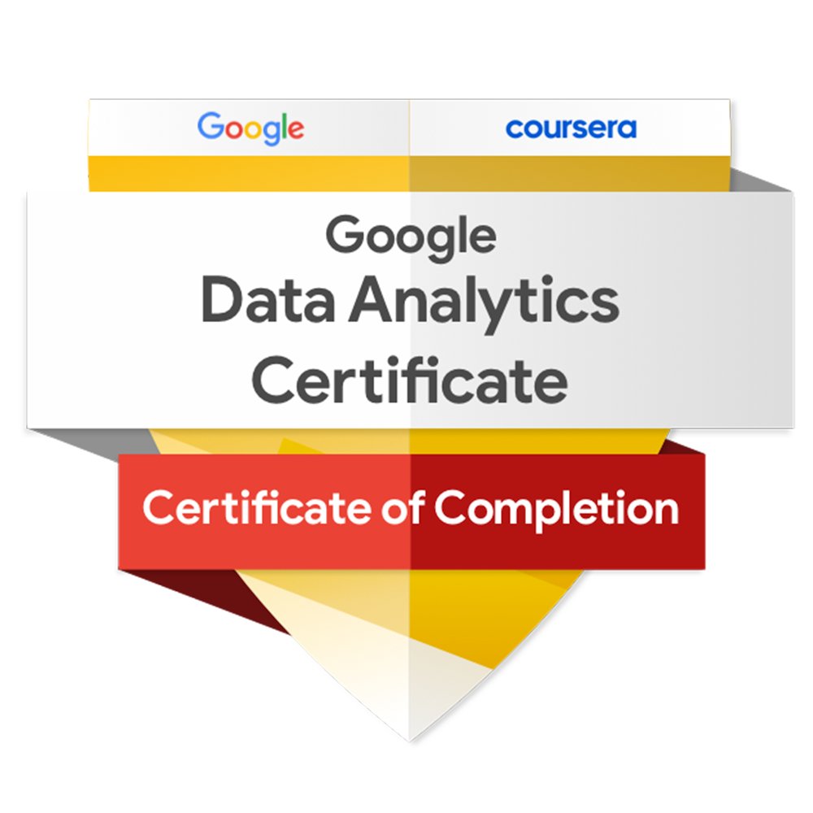

Yogesh Gajula
I'm an Designer
About
🧑💻 Data Scientist | AI/ML Engineer | 5+ Years of Industry Experience
📍 Wichita, KS, USA
🎓 Masters of Science in Computer Science | University of Dayton | OH, USA (Dec 2024)
📜 Certified in Autonomous Systems and Data Science | University of Dayton | OH, USA (Dec 2024)
I am an accomplished Data Scientist and AI/ML Engineer with 5+ years of experience delivering scalable machine learning, deep learning, and generative AI solutions in software development, IT services, and e-commerce. Proficient in Python, R, SQL, TensorFlow, and cloud-native pipelines on AWS and GCP. Adept at building predictive models, fine-tuning LLMs, and deploying production-ready AI systems that drive measurable business impact in fraud detection, risk scoring, NLP, and anomaly detection.
"Data Scientist | AI/ML Engineer | Data Analyst – Bridging Data Insights, Engineering, & Scalable Analytics."
Passionate about turning complex data into meaningful impact, I use AI and technology to solve real-world problems. At Intuit and HCL Tech, I’ve worked on cloud-native ML, analytics, and automation—always driven by curiosity and a love for innovation. For me, technology is about building smarter solutions that make a difference
- Phone: +1 937 626 0009
- City: Wichita, KS, USA
- Languages: English, Telugu, Hindi
- Goal: Innovate, Learn, Build.
- Degree: Master's
- Email: yogesh1297@gmail.com
"The future belongs to those who learn more skills and combine them in creative ways." – Robert Greene
Skills
- Methodologies: SDLC, Agile, Waterfall, A/B Testing, Experimental Design
- Languages: Python, R, SQL, MATLAB, HTML, CSS
- Frameworks: TensorFlow, PyTorch, Keras, Scikit-Learn, Flask
- Libraries: NumPy, Pandas, Matplotlib, Transformers Architecture
- Big Data & ETL Tools: PySpark, Apache Spark, Hadoop, MapReduce, HDFS, Spark Streaming
- Databases: MySQL, PostgreSQL, SQL Server 2008, MongoDB
- Data Visualization: Tableau, Power BI, Excel (Pivot Tables, VLOOKUP)
- Machine Learning: Linear/Logistic Regression, Clustering, SVM, PCA, Random Forest, Boosting, Lasso, Ridge
- Deep Learning: CNN, RNN, Fine-tuning & Transfer Learning
- Generative AI & LLMs: Foundation Models (GPT, LLaMA, Claude), Prompt Engineering, Tokenization (BPE, WordPiece), RLHF
- Data Management: S3, Glue
- Tools & APIs: Postman, REST APIs, JSON Parsing, Git, Jenkins
- IDEs: Jupyter Notebook, PyCharm, Visual Studio Code
Resume
A Computer Science graduate with a master’s degree from the University of Dayton, specializing in data engineering, machine learning, and AI. Seeking opportunities in software development, AI-driven research, and image processing. Passionate about contributing to innovative projects and applying advanced computing techniques, with a long-term goal of entrepreneurship.
Summary
Yogesh Gajula
Passionate and detail-oriented Master’s in Computer Science graduate with expertise in Python, MATLAB, SQL, and cloud computing. Skilled in image and video processing, AI model development, and data security, with hands-on experience working on AI and data analytics projects, ensuring scalable, secure, and efficient solutions.
- Dayton, OH
- +1(937) 626-0009
- yogesh1297@gmail.com
Education
Master's in Computer Science
Jan 2023 - Dec 2024
University of Dayton, OH, USA
I have maintained a 3.96 GPA, completing coursework in advanced programming, database management, algorithm design, deep learning, computer vision, operating systems, and security in autonomous systems. To successfully complete these courses, I worked on projects in each, applying theoretical concepts to real-world problems. Alongside my master's degree, I also earned a Graduate Certificate in Autonomous Systems.
B.Tech in Electronics & Communications Engineering
Apr 2016 - May 2019
Keshav Memorial Institute of Technology, Hyderabad, TS, India.
I graduated with a Bachelor's in Electronics and Communication Engineering. My coursework included JAVA Object-Oriented Programming, VLSI, microprocessors, circuit design, and digital signal processing. My projects include developing a Cloud-Based Facial Recognition Security System and tracking objects by their color using a PIXY vehicle.
Diploma in Electronics & Communications Engineering
May 2013 - Mar 2016
Government Polytechnic Masabtank, Hyderabad, TS, India.
I Completed a Diploma in Electronics and Communication Engineering, with a project on a ZigBee-based smart home automation system, integrating hardware and software to enable remote control of devices, demonstrating practical skills in communication systems and embedded solutions
Professional Experience
Grader-Teaching Assistant
2024
University of Dayton, Computer Science Department
- Assisted 210+ students in Advanced Computer Vision, Algorithm Design, and DBMS courses.
- Conducted 30+ lab sessions, enhancing students’ understanding of Python, OpenCV, and MATLAB.
- Mentored students in algorithm design, providing guidance on complex concepts like graph algorithms and dynamic programming.
- Provided structured feedback on critical major SQL/NoSQL projects, improving database query optimization.
- Graded more than 50 assignments and projects, ensuring all evaluations were delivered on time
Machine Learning Data Associate - TRON
Aug 2019 - Jul 2021
Amazon Development Center, India.
- Collaborated with Amazon Robotics & AVOC teams to automate warehouse operations across 30+ global locations, streamlining workflow and enhancing operational speed and accuracy.
- Processed and analyzed over 70,000 data points monthly, maintaining machine learning model accuracy exceeding 98%, optimizing model performance for real-time decision-making.
- Contributed to high-impact projects such as 'Nike' and 'Polybag', leading to 36% reduction in per-shipment packaging weight and Provided data-driven insights to internal teams, supporting decision-making and ensuring the successful implementation of machine learning models.
- Led a Linux key remapping project on the GUI interface, resulting in a 10% reduction in task completion time and helping associates save time when analyzing data points, improving the efficiency of data processing.
Student Intern
May 2015 - Nov 2015
Defence Research Development Laboratory, Hyderabad, TS, India.
- Implemented 5 network topologies for wired transmission systems, optimizing data flow and signal clarity across research facilities.
- Calibrated 30+ transducers and sensors, improving signal accuracy by 15%.
- Submitted a detailed 50-page project report on "Study of Instrumentation Facilities" and received official certification.
Portfolio
Certifications
I have earned certifications in autonomous systems, data science, and programming, demonstrating my expertise in AI, machine learning, and data analytics. My credentials include a Graduate Certificate in Autonomous Systems & Data Science from the University of Dayton, along with Python and SQL certifications from Udemy. I also hold the Google Data Analytics Professional Certificate, having successfully completed its comprehensive curriculum covering data processing, visualization, R programming, and case study analysis. These certifications reinforce my ability to develop AI-driven solutions and extract meaningful insights from complex datasets.
Certificate in Autonomous Systems and Data Science
{kind=link}
Completed courses in Advanced Programming, Data Structures, Security in Autonomous Systems, VR, Deep Learning, and Computer Vision, with a focus on practical applications and solutions.

Google Data Analytics Specialization
{kind=link}
I earned the Google Data Analytics Certificate, gaining hands-on expertise in data analytics with tools like spreadsheets, SQL, Tableau, and R. I am skilled in preparing, analyzing, and presenting data for informed decision-making.
SQL Certification
{kind=link}
Completed hands-on SQL database management, query optimization, and data manipulation exercises, focusing on practical database solutions and real-world applications.
Analyze Data to Answer Questions
{kind=link}
Completed the Google course as part of Data Analytics professional certificate, learning to organize data with sorts and filters, convert and format data, and use SQL functions to combine tables. Gained skills in data aggregation, analysis, and SQL.
Ask Questions to Make Data-Driven Decisions
{kind=link}
As part of Data Analytics professional certificate, I Learned to apply problem-solving roadmaps to analysis scenarios, use data for decision-making. Gained skills in structured thinking, data analysis, and questioning for informed decision-making.
Python
{kind=link}
Gained proficiency in Python programming, automation, and data analytics through hands-on projects and real-world applications on Udemy.
Foundations: Data, Data, Everywhere
{kind=link}
Learned key data analytics concepts including data ecosystems, analytical thinking, and the role of data tools like spreadsheets, query languages, and data visualization. Gained an understanding of data analyst roles and responsibilities.
Prepare Data for Exploration
{kind=link}
Earned as part of the Data Analytics Professional Certificate. Learned key factors in data collection, identifying bias, and best practices for organizing data. Gained an understanding of databases, metadata, and ethical considerations in data handling.
Process Data from Dirty to Clean
{kind=link}
Earned as part of the Data Analytics Professional Certificate. Learned to define data integrity, identify risks, and apply SQL functions for data cleaning. Developed basic SQL queries and learned how to verify data cleaning results.
Share Data Through the Art of Visualization
{kind=link}
Earned a certification in data visualization, demonstrating proficiency in Tableau, data-driven storytelling, and effective presentation principles.
Data Analysis with R Programming
{kind=link}
Currently learning the R programming language, including functions, variables, data types, and pipes. Exploring how to generate visualizations and structure content in R Markdown, strengthening skills in data analysis and visualization.
Google Data Analytics Capstone: Complete a Case Study
{kind=link}
Currently working on applying the data analysis process to a case study, focusing on data cleansing, visualization, and SQL. Learning to showcase skills through portfolios and gain a competitive edge by learning AI practices from Google experts.
Contact
Let’s connect! Reach out for any professional discussions.
Address
Dayton, OH 45420
Call Me
+1 (937) 626 0009
Email Me
yogesh1297@gmail.com